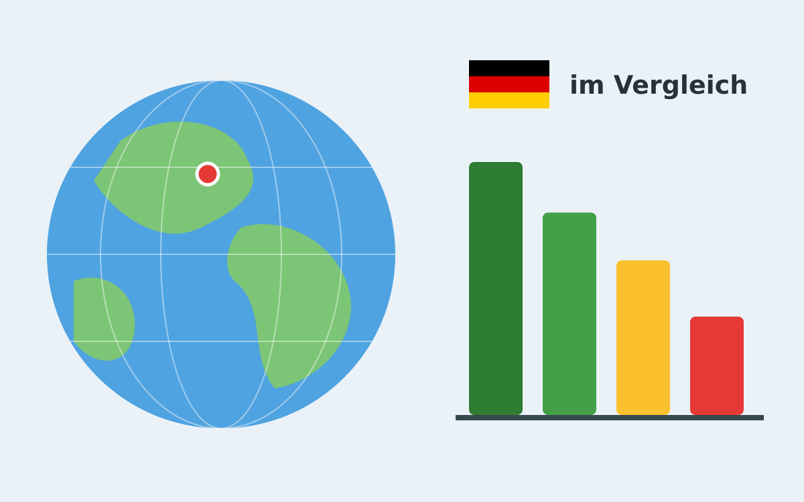

Wie steht Deutschland im internationalen Vergleich da? In diesem Beitrag möchte ich einige Bereiche hervorheben, in denen Deutschland sehr gut, gut, mittelmäßig oder schlecht abschneidet.
{kind=link}

In einigen Fällen macht ein Vergleich mit sehr kleinen Ländern (unter 5 Millionen Einwohner oder unter 10.000 km²) wenig Sinn, da diese oft spezielle Vorteile haben.
Wenn es klare Zielwerte gibt, nehme ich zur Einordnung die tatsächlichen Werte, z.B. bei der Fertilitätsrate oder Zigaretten/Alkoholkonsum.
Wenn nur gilt "je höher, desto besser" oder "je niedriger, desto besser", nehme ich Ranglisten:
- Sehr gut: Top 10%
- Gut: Top 25%
- Könnte besser sein: Top 50%
- Schlecht: Untere 50%
Ich nehme folgende Kategorien:
- Wohlstand: Hier geht es mir um persönlichen Wohlstand von typischen Bürgern; also Einkommen, Vermögen, Arbeitszeit, Arbeitslosigkeit. Wenn es größere Gruppen gibt, die arm/ärmer sind, dann kommt das hier rein.
- Wirtschaft: Hier geht es mir ums Gesamtbild, also BIP, Exporte, Innovation, Vermögen.
- Staat: Wie stabil ist er? Wie verhält er sich international?
- Risiken: Wie sicher ist es, in Deutschland zu leben?
- Freiheit: Wie gut kann ich als Bürger mein Leben gestalten?
- Gesundheit: Wie steht es um die Gesundheit der Bevölkerung?
Sehr gut
- Wirtschaft und Wohlstand:
- Arbeitszeit: Platz 66 von 66 - wir müssen weniger arbeiten und haben trotzdem eine starke Wirtschaft.
- Beschäftigtenquote: Platz 7 von 48.
- Einkommensverteilung: Wenn man mal die Top-1% ausnimmt, sind Einkommen in Deutschland sehr fair - es gibt ein Gefälle, aber es ist nicht absurd.
- Durchschnittslohn: Hinter Island, Schweiz, Österreich. Vor Frankreich, Irland, Schweden.
- Wirtschaft:
- Gesamtvermögen: 17 Billionen USD, Japan ist bei 22, China bei 84 und die USA bei 140.
- Platz 3 nach BIP (absolut, hinter USA und China; Stand 2025), Platz 18 für BIP/Kopf
- Automobilexporte: Platz 1 von 20; allerdings sind die Zahlen ein paar Jahre alt und ich finde den Fokus auf einen Bereich nicht unbedingt gut.
- Touristen: Platz 8 von 207.
- Staat:
- Kreditrating: Insbesondere vor Finnland, den USA, Österreich und Irland
- Good Country Index: Platz 3 von 149
- Risiken:
- Verkehrstote: 4,1 Fälle pro Jahr und 100.000 Einwohner. Im Vereinigten Königreich sind es nur 3,1, in Schweden nur 2,8 und in Norwegen und der Schweiz nur 2,7.
- Weltrisikobericht: Platz 161 von 181.
- Global Cybersecurity Index
- Erneuerbare Frischwasserressourcen
- Freiheit:
- Reisepass: Auf Platz 4 von 97 (weiß jemand, warum Spanien für Nauru visafrei ist?)
- Persönliche Freiheit: Platz 8 von 167
- Gesundheit:
- Unterernährung ist in Deutschland praktisch kein Thema (unter 2,5%). Selbst in Japan ist der Anteil mit 3,2% (2020) etwas höher.
- Weitere:
- Human Development Index (HDI): Platz 5 von 193 (zusammen mit Schweden, HDR 2025); nur Island, Norwegen, Schweiz und Dänemark sind vor uns.
Gut
- Wohlstand:
- Armutsquote: Hinter Island, Frankreich, Irland. Vor Dänemark, Norwegen, Schweden.
- Arbeitslosenquote: Hinter Japan, Malta, Südkorea. Vor Schweden, Norwegen, Finnland
- Prosperity Index: Platz 8 von 167
- Wirtschaft:
- World Intellectual Property Indicators: Deutsche Firmen haben viele Patente.
- Freiheit:
- Social Progress Index: Platz 11 von 163
- Gesundheit:
- Lebenserwartung: 81,7 Jahre; in Monaco sind es 89,6 Jahre, in Singapur 86,5 Jahre und in Japan 85 Jahre.
- Kindersterblichkeit: Deutlich besser sind Montenegro, Island und Estland.
- Ärztedichte: Platz 18 von 83. Hinter Kuba, Monaco, Schweden. Vor Schweiz, Dänemark, Italien.
- Krankenhausbetten: Wir haben viele Krankenhausbetten, aber interessanter wäre die Auslastung und wie häufig es passiert, dass kein Krankenhausbett verfügbar ist, wenn es gebraucht wird. Höher ist hier nicht unbedingt besser, sondern ggf. ein Grund für hohe Gesundheitskosten.
- Risiken:
- Tötungsrate: 0,9 Tötungsdelikte pro 100.000 Einwohner und Jahr in Deutschland. 0,7 in Polen und Spanien, 0,5 in Italien, 0,2 in Japan.
- Freiheit:
- LGBT-Toleranz und -Rechte
- Bildung: viele Jahre in der Schule - obwohl die Bildungsergebnisse nicht überzeugend waren
- Staat:
- Fragile States Index
- Staatsschuldenquote: 40 für Deutschland, 5 für USA, 1 für Japan, 4 für Frankreich. Klar, es ist viel besser bei Schweden (78)/Finnland (46) /Norwegen (88)/Schweiz (77)/Luxemburg (86).
- Größe des Eisenbahnnetzes: Wir sind insbesondere deutlich vor Japan und Frankreich.
- Stromerzeugung aus erneuerbaren Energien: 63%. Besser sind Dänemark mit 88%, Island mit 100% und Norwegen mit 98%.
- Weltfriedensindex: Platz 20 von 163.
- World Happiness Report: Platz 17 von 147 (2026).
Könnte besser sein
- Wirtschaft und Wohlstand:
- Medianvermögen: Nur 61.000 USD/Volljährigen. Island führt mit 375.735 USD, Belgien ist bei 267.887 USD und die Schweiz bei 168.084 USD.
- Vermögensverteilung: Ist in Deutschland mit einem Gini-Koeffizienten von 78,8 sehr ungleich. Im Vereinigten Königreich ist er bei 70,6, in Frankreich bei 70,2, in Japan bei 64,7 und in Island bei 64,6.
- Inflationsrate: Insbesondere 2022 (6,9%) und 2023 (6,0%) war sie sehr hoch. Allerdings war sie sehr lange auch sehr niedrig.
- Gender Pay Gap
- Wirtschaft:
- Arbeitsproduktivität auf Platz 18 von 181
- Gesundheit:
- Luftverschmutzung: Platz 143 von 218. Besser sind Island, Finnland, Schweden.
- Übergewicht: 20,4% haben Adipositas (2022)
- Fleischkonsum: Zum einen ein Zeichen von Wohlstand, aber auch ein Gesundheitsproblem
- Kokainkonsum: Besser sind Japan, Zypern, Österreich, Griechenland
- Suizidrate: 12,3 Fälle pro 100.000 Einwohner. Schlechter sind Frankreich mit 13,8, die Schweiz mit 14,5, Belgien mit 18,3 und Südkorea mit 28,6.
- Freiheit:
- Gefängnisinsassen pro 100.000 Einwohner: 71 pro 100.000 Einwohner. Dänemark/Norwegen/Niederlande sind besser. In Finnland sind es nur 51. In Japan nur 40. In Island nur 37.
- Staat:
- Internetnutzer: Nur 94% der Bevölkerung nutzen das Internet. Ich hoffe sehr, dass das ein Generationenthema ist und kein Zugangsthema. In Norwegen sind es 99%.
- Gesundheitsausgaben: Besser als in den USA und der Schweiz, aber Österreich/Dänemark/Niederlande zeigen, dass es besser geht
Schlecht
- Strompreis: Wir sind zwar nicht der Spitzenreiter, aber sehr weit vorne. Das hilft natürlich nicht bei der Elektrifizierung und ist auch nicht toll für arme Haushalte.
- Fertilitätsrate: 1,32 Kinder pro Frau (2025). Bei allem unter ca. 2,1 braucht man zwingend Einwanderung, um die Bevölkerungsgröße zu halten. Wenn die Bevölkerung schrumpft, dann sinkt der wirtschaftliche Output. Dann sinkt die Bedeutung in der Welt. Dann wird Verwaltung ineffizient, weil sie für mehr Leute ausgelegt ist.
- Hoher Alkoholkonsum pro Kopf: Nur Moldau, Litauen, Tschechien und die Seychellen trinken mehr.